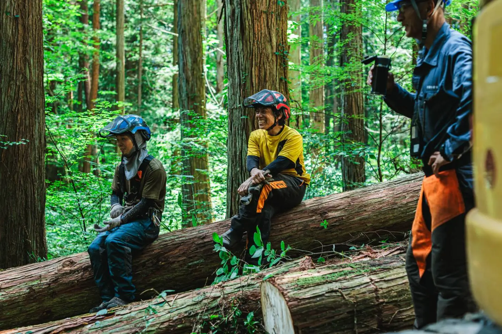

RINDOの林業キャリアアドバイザーによる無料オンライン面談。応募や転職をすぐに勧める場ではなく、「林業へ興味を持った入り口」として気軽に話せる場です。
ひとつでも当てはまったら、林業キャリアアドバイザーとの無料面談をご利用ください。こうしたご相談に、一つひとつ丁寧にお応えします。
一般的な転職エージェントのように、すぐに転職や応募を勧める場ではありません。
まだ転職するか迷っている段階でも大丈夫です。情報収集だけ、話を聞いてみたいだけ、という方も歓迎。あなたに合う求人があれば、ご希望に応じてご紹介します。
林業は、他業界以上に会社ごとの違いが大きい業界です。業界や求人の特徴を踏まえたうえで、具体的にご相談に乗ります。
「とにかく早く転職する」ことではなく、その方にとって納得感のある選択になることを大切にしています。
官公庁や民間企業で20年近く、様々な林業の現場を見てきました。林業は、会社によって仕事内容や働き方、育成体制、暮らし方まで大きく異なる業界です。だからこそ「何となく良さそう」で決めるのではなく、自分に合った環境を見極めることが大切だと考えています。
面談では、求人票だけでは分かりにくい部分も含めて、できるだけ分かりやすくお伝えします。転職を決めていない段階でも大丈夫です。まずは情報収集のひとつとして、お気軽にご相談ください。
林業の仕事内容や、造林・素材生産などの違い、会社による特徴の違いなどを分かりやすくご説明します。
「どんな仕事が向いているか」「どんな条件を大切にしたいか」を一緒に整理しながら、転職の方向性を考えていきます。
求人票だけでは分かりにくい職場の雰囲気や、教育体制、働き方の特徴なども含めてお伝えします。
未経験からのチャレンジや、地方での暮らしを含めた転職についてもご相談いただけます。業界内での転職のご相談も歓迎です。
下のカレンダーから空いている日時を選ぶだけ。平日の夜や週末の枠もご用意しています。
予約後に届くリンクから参加するだけ。スマホからでも参加できます。聞きたいことだけ、気軽にお話しください。
応募してもしなくても大丈夫。気になることが出てきたら、LINEで続けてご相談いただけます。
「転職を決めていないのに相談していいのか不安でしたが、『情報収集だけでも大丈夫』という言葉どおり、無理に急かされることなく、自分のペースで考えられました。」
「会社ごとの働き方や育成体制の違いを具体的に教えてもらえて、求人票の見方が変わりました。」
「平日の夜に自宅から参加できたので、仕事を続けながら相談できました。移住のことまで話せたのが良かったです。」
カレンダーから希望日時を選ぶだけ。
平日の夜・週末もOK／Google Meetで実施します。
予約の前に聞きたいことがある方は
LINEで気軽に相談する（24時間受付）